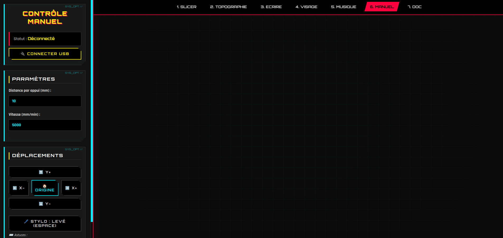

Module 6 : Le Contrôleur Manuel
Le Contrôleur Manuel est l'interface de diagnostic et de pilotage en temps réel de la MachineThatDraws. Il permet de se connecter directement à la machine via l'API Web Serial, de vérifier le bon fonctionnement des axes (X, Y) et du stylo (Z), et de réaliser des tests de vitesse pour affiner les futurs réglages de la machine.

1. Communication Web Serial Directe
Ce module exploite l'API du navigateur pour établir un pont série direct (à 115200 bauds) avec le microcontrôleur de la machine. Finis les logiciels intermédiaires lourds : un simple clic sur le bouton de connexion ouvre le flux de données. Dès la liaison établie, le système envoie immédiatement une commande de sécurité pour lever le stylo afin d'éviter tout accident sur le papier.
2. Raccourcis et Ergonomie
Pour une manipulation rapide et intuitive, l'interface est entièrement contrôlable au clavier :
- Flèches directionnelles (⬆️⬇️⬅️➡️) : Déplacent la machine sur les axes X et Y en fonction de la distance (ex: 10 mm) et de la vitesse paramétrées à l'écran.
- Barre d'Espace : Agit comme un interrupteur instantané pour monter ou descendre le stylo.
3. Les Fonctions Clés
Le panneau de contrôle regroupe les actions essentielles pour préparer la machine avant un dessin :
- Déplacements : Permettent de bouger manuellement la tête de la machine pour réaliser différents tests.
- Gestion Z (Stylo) : Contrôle direct du mécanisme de levage pour faire des tests.